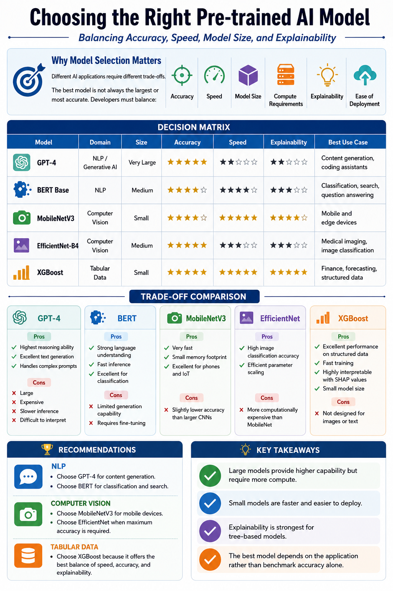

{kind=link}
Title
Pre-trained AI Model Decision Matrix
Portfolio Artifact | Workshop 5
A comparative artifact for selecting pre-trained AI models by balancing accuracy, inference speed, model size, compute requirements, and explainability.

Artifact Information
Pre-trained AI Model Decision Matrix
PNG decision matrix with supporting Word document.
This artifact compares representative pre-trained models from generative AI, natural language processing, computer vision, and tabular machine learning.
To support informed model selection by showing that the best choice depends on deployment constraints, business goals, and interpretability needs rather than benchmark accuracy alone.
GPT-4, BERT Base, MobileNetV3, EfficientNet-B4, and XGBoost.
Accuracy, inference speed, model size, computational requirements, explainability, deployment efficiency, and practical application fit.
The matrix connects model selection to real use cases such as conversational AI, semantic search, embedded computer vision, high-accuracy image classification, forecasting, and healthcare analytics.
This artifact shows my ability to compare AI model trade-offs and communicate practical selection guidance for technical and non-technical stakeholders.